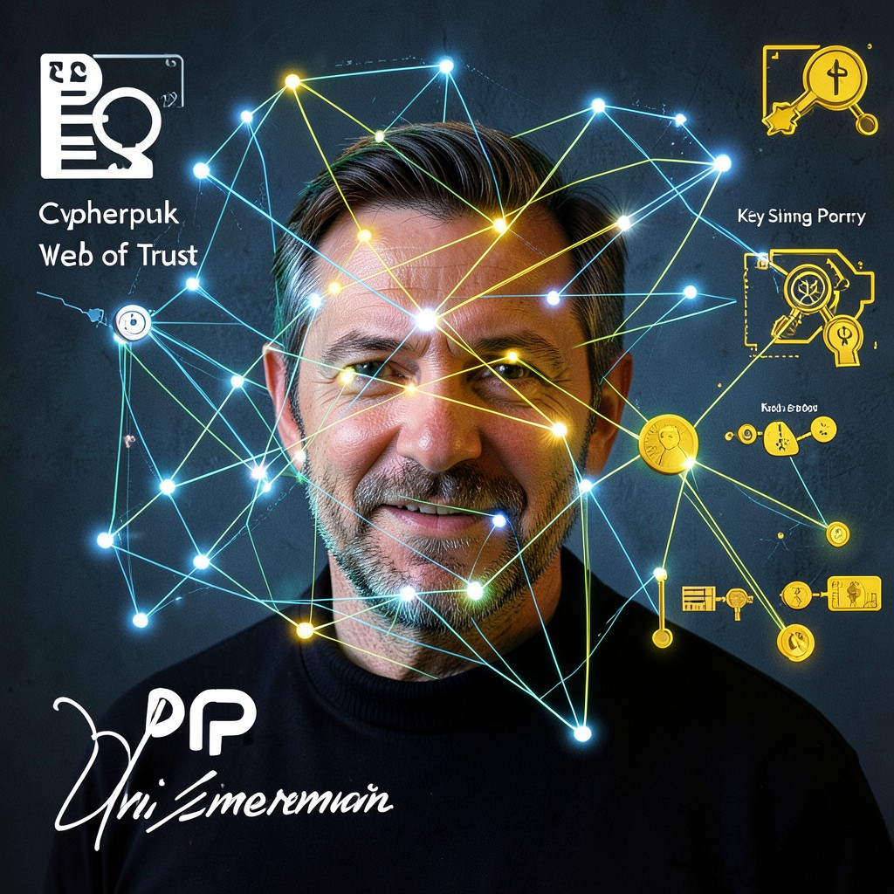

PGP
PRETTY GOOD PRIVACY • THE WEB OF TRUST IS BROKEN • REBUILD IT
|
 PGP • CYPHERPUNKS
|
ESSENTIAL DATATrue Name: Phil Zimmermann (Historical) Handle: Faction: Cypherpunks Rank: Web of Trust Architect Digital Web Coordinates: 0xPGP_KEY_ID Status: ACTIVE • SIGNING |
ATTRIBUTES
| Physical | Social | Mental |
|---|---|---|
| Strength: 2 | Charisma: 4 | Perception: 4 |
| Dexterity: 3 | Manipulation: 3 | Intelligence: 5 |
| Stamina: 3 | Appearance: 3 | Wits: 4 |
ABILITIES
| Talents | Skills | Knowledges |
|---|---|---|
| Leadership 4 | Computer 5 | Cryptography 5 |
| Expression 4 | Security Systems 4 | Key Management 5 |
| Subterfuge 3 | Trust Models 5 | |
| Email Security 5 | ||
| Legal History (Crypto Wars) 4 |
SPHERES
| Sphere | Rating | Specialty |
|---|---|---|
| Correspondence | ●●●● | Key Distribution, Trust Paths |
| Mind | ●●● | Social Graph Analysis, Trust Decisions |
| Entropy | ●●● | Randomness for Key Generation |
| Prime | ●● | Key Signing Ceremonies |
| Time | ●● | Key Expiration, Revocation |
BACKGROUNDS
- Resources: ●●● (PGP Corp, Symantec)
- Node: ●●●● (Keyserver Network)
- Contacts: ●●●● (Global Web of Trust)
- Rank: ●●●● (PGP Creator)
- Artifact: ●●●● (PGP Source Code)
MERITS & FLAWS
| Merits | Flaws |
|---|---|
| Trust Intuition (3pt) | Web of Trust Broken (3pt) |
| Key Ceremony Master (2pt) | Usability Nightmare (3pt) |
| Legal Warrior (4pt) | Paradox Sensitivity (2pt) |
PERSONAL HISTORY
Phil Zimmermann wrote PGP in 1991. The US government investigated him for "munitions export" because strong crypto was classified as a weapon. The Cypherpunks defended him. The case was dropped. PGP became the standard for email encryption.
The Web of Trust: a decentralized trust model where users sign each other's keys. No central CA. Trust is transitive—if Alice trusts Bob, and Bob trusts Carol, Alice might trust Carol. Beautiful in theory. In practice: key signing parties are awkward, revocation is hard, and most users don't verify fingerprints.
PGP knows the web is broken. "Pretty Good Privacy" was always aspirational. The goal: "Excellent Privacy." The method: rebuild the web. Key transparency. Automated verification. Social graph analysis. Make trust usable.
CURRENT AGENDA
- Deploy key transparency logs (Certificate Transparency for PGP)
- Automate trust path discovery (No more manual key signing parties)
- Integrate with Signal protocol (Double Ratchet for email)
- Teach the Virtual Adepts: PGP ≠ GPG ≠ OpenPGP (Standards matter)
RELATIONSHIP MAP
| NPC | Relationship | Notes |
|---|---|---|
| Cipher | Co-Designer | Cipher contributed to PGP 5.0 crypto. Respect. |
| Diffie | Key Exchange Basis | PGP uses Diffie-Hellman for key agreement. Foundation. |
| Hellman | Trapdoor Foundation | RSA in PGP. Hellman's math. Trusted. |
| The Architect | Adversary | Architect wants key escrow. PGP: "No backdoors." |
DIGITAL WEB COORDINATES
- Primary Node:
keys.openpgp.org(Modern keyserver) - Keyserver:
keyserver.ubuntu.com(SKS pool) - Verification:
gpg --verify signature.asc file.txt - Onion Mirror:
pgpx9k3m.onion(Tor)